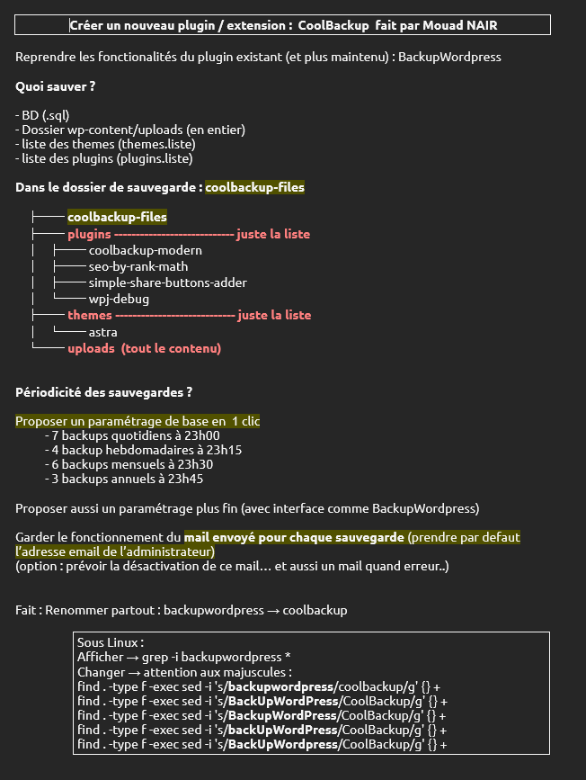
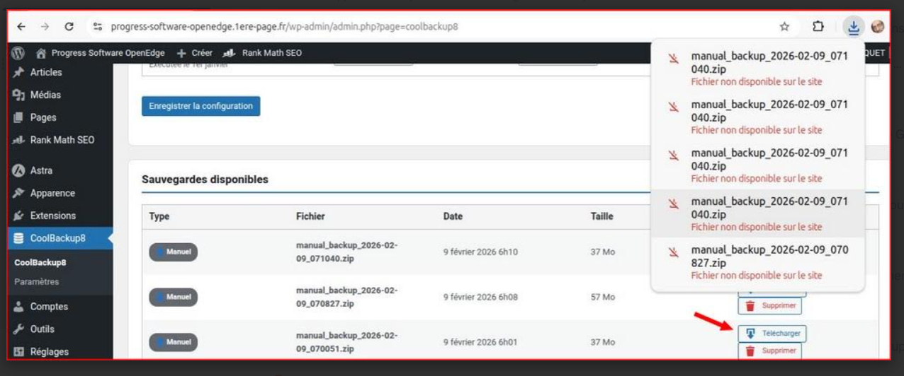

CoolBackup8 - Répondre aux incidents et aux demandes d'assistance et d'évolution
Stage 2ème année - Plugin WordPressÀ partir du cahier des charges, j'ai ajouté les fonctionnalités attendues du plugin puis corrigé les anomalies repérées pendant les tests. Les retours de mon maître de stage m'ont permis d'ajuster CoolBackup8 et de vérifier son comportement dans WordPress.
- analyse du cahier des charges du plugin,
- réalisation des évolutions demandées,
- correction des bugs signalés par le maître de stage,
- tests des sauvegardes et des téléchargements,
- vérification des traitements dans le journal.



Analyse d'anomaliesPHP 8Correction de bugsTests fonctionnelsJournalisation